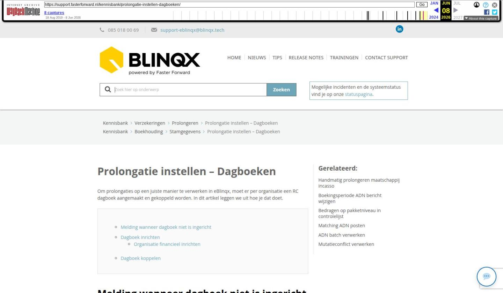

Prolongatie instellen – Dagboeken

Tekstinhoud
Prolongatie instellen – Dagboeken
Om prolongaties op een juiste manier te verwerken in eBlinqx, moet er per organisatie een RC dagboek aangemaakt en gekoppeld worden. In dit artikel leggen we uit hoe je dat doet.
Melding wanneer dagboek niet is ingericht
Dagboek inrichten
Organisatie financieel inrichten
Dagboek koppelen
Melding wanneer dagboek niet is ingericht
Als het dagboek niet is ingericht, zie je een driehoek bij het ontvangen van een ADN bericht.
Deze melding luidt: "Geen organisatie gevonden met de porcode …. en geen RC dagboek voor deze organisatie aanwezig".
Indien je een al een nieuw dagboek hebt aangemaakt, omdat er een driehoek voor de prolongatiebatch staat, dan dien je nogmaals op dit driehoekje te klikken nadat je de dagboek hebt aangemaakt.
Dagboek inrichten
Om het dagboek in te richten moet je eerst deze stappen doorlopen:
De verzekeraar (organisatie) moet in eBlinqx aanwezig zijn. Hier kan je lezen hoe je deze aanmaakt, indien deze nog niet in eBlinqx staat.
De POR code moet ingericht zijn onder de verzekeraar (niet verplicht om dagboek aan te kunnen maken, maar wel essentieel om prolongaties correct te verwerken)
Organisatie financieel inrichten
Doorloop de volgende stappen om de financiële inrichting van de verzekeraar/organisatie te voltooien:
1. Zoek de organisatie op via Beheer – Organisatie & personen.
2. Ga naar het tabblad 'Financieel' en klik hier het volgende aan per subadministratie:
Tussenrekening maatschappij (wanneer je werkt zonder tussenrekening 1230 dan staat deze optie er niet meer tussen en hoef je deze ook niet aan te vinken)
Rekening – courant maatschappij
Onbekende ontvangsten
Vul hier de tussenrekening maatschappij, rekening-courant rekening en onbekende betalingen rekening in (de groene velden).
Dagboek koppelen
Om de organisatie vervolgens aan een dagboek te koppelen, ga je naar Financieel – Stamgegevens – Onderhoud dagboeken.
Ga naar het dagboek wat correspondeert met de organisatie waarvoor je de POR code hebt ingericht. Als het dagboek nog niet bestaat, maak je deze aan door op het toevoegicoon te klikken.
Heb je het dagboek gevonden, klik dan op 'Wijzig'. Je komt dan in het volgende scherm terecht.
Selecteer bij het veld Organisatie de organisatie waar de POR code aan gekoppeld zit en klik vervolgens op het opslaanicoon. De organisatie is nu gekoppeld aan het dagboek en kan ingezet worden voor de prolongatie module.
LET OP: Alleen de maatschappij met de hoofd POR code moet gekoppeld worden aan een dagboek, de maatschappijen met een sub POR code niet!
Laatste update: 16 maart 2026
Was deze informatie nuttig?
Ja Nee